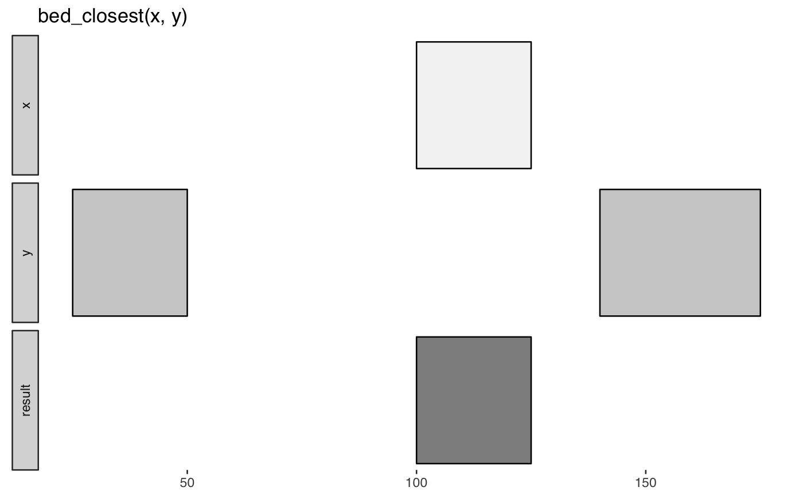

Identify closest intervals.
bed_closest(x, y, overlap = TRUE, strand = FALSE, strand_opp = FALSE, suffix = c(".x", ".y"), distance_type = c("genome", "strand", "abs"))
data_frame
http://bedtools.readthedocs.io/en/latest/content/tools/closest.html
Other multi-set-ops: bed_coverage,
bed_intersect, bed_subtract,
bed_window
x <- tibble::tribble( ~chrom, ~start, ~end, 'chr1', 100, 125 ) y <- tibble::tribble( ~chrom, ~start, ~end, 'chr1', 25, 50, 'chr1', 140, 175 ) bed_glyph(bed_closest(x, y))x <- tibble::tribble( ~chrom, ~start, ~end, "chr1", 500, 600, "chr2", 5000, 6000 ) y <- tibble::tribble( ~chrom, ~start, ~end, "chr1", 100, 200, "chr1", 150, 200, "chr1", 550, 580, "chr2", 7000, 8500 ) bed_closest(x, y)#> # A tibble: 4 × 7 #> chrom start.x end.x start.y end.y .overlap .distance #> <chr> <dbl> <dbl> <dbl> <dbl> <int> <int> #> 1 chr1 500 600 550 580 30 0 #> 2 chr1 500 600 100 200 0 -300 #> 3 chr1 500 600 150 200 0 -300 #> 4 chr2 5000 6000 7000 8500 0 1000 #>bed_closest(x, y, overlap = FALSE)#> # A tibble: 3 × 6 #> chrom start.x end.x start.y end.y .distance #> <chr> <dbl> <dbl> <dbl> <dbl> <int> #> 1 chr1 500 600 100 200 -300 #> 2 chr1 500 600 150 200 -300 #> 3 chr2 5000 6000 7000 8500 1000 #>